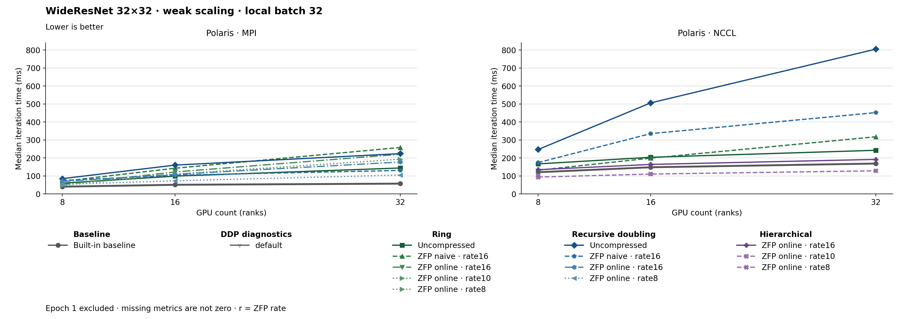

The figure uses lines. Methods use colors, line styles and markers. The metric is Median iteration time (ms). Polaris · MPI, GPU count (ranks) 8: Built-in baseline has the lowest plotted value, 40.575. Polaris · MPI, GPU count (ranks) 16: Built-in baseline has the lowest plotted value, 51.050. Polaris · MPI, GPU count (ranks) 32: Built-in baseline has the lowest plotted value, 57.400. Polaris · NCCL, GPU count (ranks) 8: Hierarchical · ZFP online · rate8 has the lowest plotted value, 93.840. Polaris · NCCL, GPU count (ranks) 16: Hierarchical · ZFP online · rate8 has the lowest plotted value, 110.670. Polaris · NCCL, GPU count (ranks) 32: Hierarchical · ZFP online · rate8 has the lowest plotted value, 128.770. Epoch 1 is excluded. Values are medians; when repeated runs are available the selected repeat policy is median. These are not confidence intervals across repeated jobs. Missing or unrecorded metrics are omitted, not set to zero.
| Panel | GPU count (ranks) | Method | Value | Runs |
|---|---|---|---|---|
| Polaris · MPI | 16 | none | 51.05 | 1 |
| Polaris · MPI | 16 | ring | 99.23 | 1 |
| Polaris · MPI | 16 | ring_zfp_naive:16 | 143.01 | 1 |
| Polaris · MPI | 16 | ring_zfp_online_coll:16 | 122.32 | 1 |
| Polaris · MPI | 16 | ring_zfp_online_coll:10 | 110.38 | 1 |
| Polaris · MPI | 16 | recursive_doubling | 160.48 | 1 |
| Polaris · MPI | 16 | recursive_doubling_zfp_naive:16 | 103.96 | 1 |
| Polaris · MPI | 16 | recursive_doubling_zfp_online_coll:16 | 109.03 | 1 |
| Polaris · MPI | 16 | recursive_doubling_zfp_online_coll:8 | 73.35 | 1 |
| Polaris · MPI | 32 | none | 57.4 | 1 |
| Polaris · MPI | 32 | ring | 144.36 | 1 |
| Polaris · MPI | 32 | ring_zfp_naive:16 | 258.33 | 1 |
| Polaris · MPI | 32 | ring_zfp_online_coll:16 | 220.87 | 1 |
| Polaris · MPI | 32 | ring_zfp_online_coll:10 | 193.32 | 1 |
| Polaris · MPI | 32 | recursive_doubling | 224.19 | 1 |
| Polaris · MPI | 32 | recursive_doubling_zfp_naive:16 | 131.04 | 1 |
| Polaris · MPI | 32 | recursive_doubling_zfp_online_coll:16 | 177.46 | 1 |
| Polaris · MPI | 32 | recursive_doubling_zfp_online_coll:8 | 105.05 | 1 |
| Polaris · MPI | 32 | ring_zfp_online_coll:8 | 180.76 | 1 |
| Polaris · MPI | 8 | none | 40.575 | 1 |
| Polaris · MPI | 8 | ring | 59.95 | 1 |
| Polaris · MPI | 8 | ring_zfp_naive:16 | 70.59 | 2 |
| Polaris · MPI | 8 | ring_zfp_online_coll:16 | 51.67 | 2 |
| Polaris · MPI | 8 | ring_zfp_online_coll:8 | 47.845 | 2 |
| Polaris · MPI | 8 | recursive_doubling | 85.16999999999999 | 2 |
| Polaris · MPI | 8 | recursive_doubling_zfp_naive:16 | 75.25 | 2 |
| Polaris · MPI | 8 | recursive_doubling_zfp_online_coll:16 | 69.44999999999999 | 2 |
| Polaris · MPI | 8 | recursive_doubling_zfp_online_coll:8 | 53.445 | 2 |
| Polaris · MPI | 8 | default | 41.5775 | 2 |
| Polaris · MPI | 8 | ring_zfp_online_coll:10 | 47.975 | 1 |
| Polaris · NCCL | 16 | none | 148.32 | 1 |
| Polaris · NCCL | 16 | ring | 203.82 | 1 |
| Polaris · NCCL | 16 | ring_zfp_naive:16 | 199.08 | 1 |
| Polaris · NCCL | 16 | hierarchical_zfp_online_coll:16 | 164.215 | 2 |
| Polaris · NCCL | 16 | hierarchical_zfp_online_coll:8 | 110.67 | 2 |
| Polaris · NCCL | 16 | recursive_doubling | 506.1 | 1 |
| Polaris · NCCL | 16 | recursive_doubling_zfp_naive:16 | 335.34 | 1 |
| Polaris · NCCL | 32 | none | 168.93 | 1 |
| Polaris · NCCL | 32 | ring | 242.72 | 1 |
| Polaris · NCCL | 32 | ring_zfp_naive:16 | 317.93 | 1 |
| Polaris · NCCL | 32 | hierarchical_zfp_online_coll:16 | 192.125 | 2 |
| Polaris · NCCL | 32 | hierarchical_zfp_online_coll:8 | 128.76999999999998 | 2 |
| Polaris · NCCL | 32 | recursive_doubling | 804.87 | 1 |
| Polaris · NCCL | 32 | recursive_doubling_zfp_naive:16 | 452.04 | 1 |
| Polaris · NCCL | 8 | none | 120.86500000000001 | 1 |
| Polaris · NCCL | 8 | ring | 167.095 | 1 |
| Polaris · NCCL | 8 | ring_zfp_naive:16 | 132.015 | 1 |
| Polaris · NCCL | 8 | hierarchical_zfp_online_coll:16 | 134.875 | 2 |
| Polaris · NCCL | 8 | hierarchical_zfp_online_coll:10 | 103.0 | 1 |
| Polaris · NCCL | 8 | hierarchical_zfp_online_coll:8 | 93.84 | 2 |
| Polaris · NCCL | 8 | recursive_doubling | 246.965 | 1 |
| Polaris · NCCL | 8 | recursive_doubling_zfp_naive:16 | 174.365 | 1 |